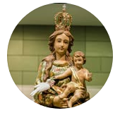
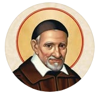

Paróquia & Comunidade

Maria Mãe da Esperança

São Vicente de Paulo
Betim - Alvorada
PROXIMA CELEBRAÇÃO
19:30 — Celebração
12/03
Diacono José Geraldo
QUINTA-FEIRA
18:00 — Adoração
Diácono Ronaldo
19:30 — Celebração